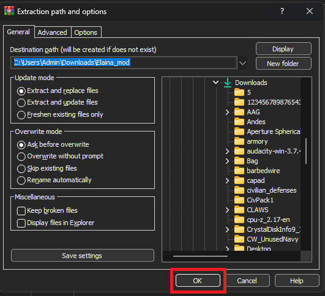
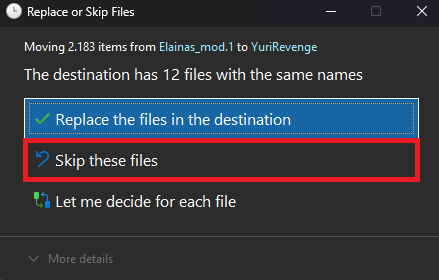

Nháy 2 lần vào file nén của MOD và bấm vào nút trên.
WinRAR sẽ hiện ra bản này, sau đó, hãy nháy vào OK để quá trình giải nén bắt đầu. Sau khi giải nén xong, máy sẽ kêu và bạn có thể thấy file đã được giải nén ở địa chỉ mà ban yêu cầu
Máy đang thực hiện chuyển file
Sau khi xong, máy sẽ hiện ra bản này, lúc này, hãy chọn SKIP
Bạn có thể tùy chọn In-game Resolution (kích thước ảnh khi vào game), Cilent Resolution (tùy chỉnh khi không chọn full màn) và Fullscreen (bật tắt full menu màn hình)